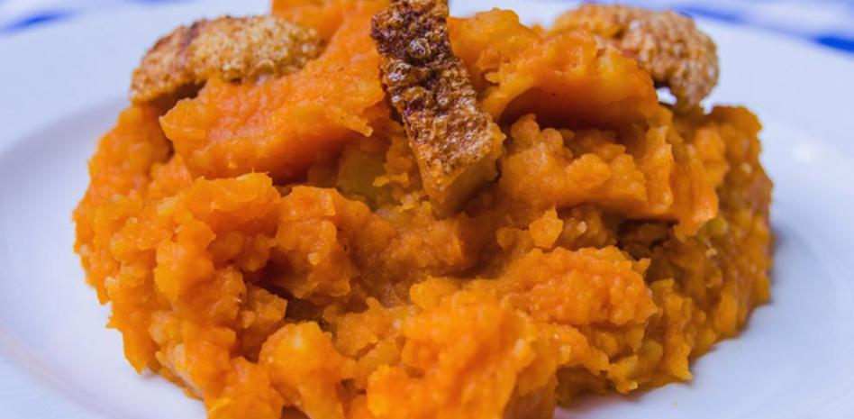

ÁVILA
LOCALIZACIÓN

Fuente: Wikipedia: Ávila
LOCALIDADES PRINCIPALES
Dentro de Ávila, las localidades más pobladas e importantes son:
- Ávila
- Arévalo
- Arenas de San Pedro
- Las Navas del Marqués
- Candeleda
- Sotillo de la Adrada
- El Tiemblo
- Cabreros
- La Adrada
- El Barco de Ávila
Fuente: Wikipedia: Ávila
GEOGRAFÍA
Es una de las de las zonas más altas de España, con un promedio de 1131.8 m. de altura. Se divide en tres grandes regiones:
- Zona norte
- Continuación de la Meseta Norte y del valle del Duero está caracterizada por un paisaje llano con suelos formados por materiales sedimentarios. Comprende la comarca de La Moraña. Los principales municipios son Arévalo y Madrigal de las Altas Torres.
- Zona central
- Se localizan el Valle de Amblés, el del Corneja y las zonas de montaña (sierra de Gredos, sierra de Béjar, sierra de Villafranca, La Serrota, sierra de la Paramera, sierra de Ávila o la sierra de Malagón) presenta ingentes formaciones graníticas que alcanzan su mayor altitud en el Pico del Moro Almanzor, que con 2592 metros es la cumbre culminante de la sierra de Gredos y la más elevada de todo el Sistema Central. Su clima de montaña se caracteriza por temperaturas muy bajas en el periodo invernal y veranos cortos y no muy calurosos. Son localidades importantes Ávila, Las Navas del Marqués, El Barco de Ávila y Piedrahíta.
- Zona sur
- Comprende la parte abulense del valle del Tiétar está caracterizada por su menor altitud y un clima más cálido. En esta parte es fácil encontrar naranjos, olivos y palmeras en los principales pueblos. Entre los municipios más importantes de esta zona se encuentran Arenas de San Pedro, Candeleda, Sotillo de la Adrada, Mombeltrán y Lanzahíta.
HISTORIA
Antes de la llegada de los romanos el territorio actual de la provincia estaba principalmente habitada por los vetones. El límite nororiental del territorio vetón se ha fijado unos pocos kilómetros al norte de la capital provincial, en Cardeñosa.8 Los vacceos también ocuparon una parte del territorio actual de la provincia, en la actual comarca de La Moraña.
La mayor parte de la población se concentraba en la parte central de la provincia.10 Los pobladores prerromanos —los vetones— crearon en este periodo grandes poblados fortificados emplazados en elevaciones del terreno.11, como El Raso, Las Cogotas, el Castro de la Mesa de Miranda, el Castro de la Era de los Moros o Ulaca.12 El castro de mayores dimensiones e importancia debió de ser el Castro de Ulaca.13 Una estimación sobre la población de este último ha arrojado un dato aproximado de unos 5900 habitantes.13 Los estudios de los ajuares de las tumbas encontradas apuntan a una sociedad vetona jerarquizada y piramidal,14 que estaría dominada por una élite militar, y en cuyo escalón más bajo no se descarta que hubiera podido haber quizás algunos esclavos.15 La base económica de los vetones fue la ganadería1617 —en la que probablemente destacaría el ganado vacuno, con un papel secundario del ganado porcino, caprino y ovino—.18 Debido a que el territorio no disfrutaba de las mejores condiciones para el aprovechamiento agrícola, la agricultura quedó relegada a un segundo plano en cuanto a importancia;19 la caza se debió ver beneficiada por una buena calidad cinegética del territorio, mientras que la recolección de bellotas —complementada por las castañas o las nueces— debió de tener una notable importancia en la dieta de los vetones.
Los vetones erigieron un gran número de esculturas de piedra con forma de toros y cerdos, los verracos, en el territorio de la actual provincia. Aunque también se encuentran en zonas que correspondían a otros pueblos prerromanos de la península ibérica, los hallazgos se corresponden principalmente a zonas vetonas. Sólo en la provincia de Ávila se ha encontrado más 43 % del total de ejemplares documentados.21 Su función es discutida todavía hoy en día; bien pudieron tener una función relacionada con ritos funerarios, de indicadores de cañadas ganaderas, de delimitación de territorios, de protectores del ganado, o serían estatuas a las que se otorgaba un papel mágico relacionado con la fertilidad.
CULTURA
El principal museo de la ciudad es el Museo de Ávila, inaugurado en 1911. En el año 1968 adquirió identidad de Museo Provincial. Está gestionado por la Junta de Castilla y León desde 1987. El museo consta de dos localizaciones: la Casa de los Deanes, un palacio renacentista del siglo XVI que funciona como sede principal y la iglesia de Santo Tomé, levantada originalmente en el siglo XII, que se utiliza como almacén visitable. Las colecciones se engloban en tres grandes secciones: una representativa de la cultura rural de la provincia, otra que recoge piezas halladas en territorio abulense desde la Prehistoria hasta el siglo XIX y finalmente una dedicada exclusivamente a piezas arqueológicas encontradas en excavaciones urbanas de la ciudad de Ávila.
En el interior de la catedral de Ávila, está instalado el museo de la Catedral, que alberga una exposición de arte religioso.299 En el convento de la Encarnación también existe una exposición permanente, que muestra diversos testimonios históricos de Santa Teresa de Jesús así como diversas piezas de arte religioso. También conserva piezas relativa a la vida y obra de San Juan de la Cruz.300 En la cripta del convento de Santa Teresa se localiza museo de Santa Teresa, que expone la obra y vida de la santa, así como diversas piezas de arte religioso.
En el interior del monasterio de Santo Tomás se mantienen varios museos, como el de Arte Oriental y el de Ciencias Naturales. El museo de Arte Oriental fue inaugurado en el año 1964, está situado en el tercer claustro del monasterio de Santo Tomás y alberga una colección variada de piezas de Japón, Vietnam, Filipinas y China.302 El de Ciencias Naturales alberga una colección de ejemplares zoológicos que formaban parte del antiguo gabinete de historia natural de la orden dominicana del monasterio.
La ciudad cuenta así mismo con el museo Caprotti, ubicado en el palacio de Superunda,304 que alberga la obra del pintor italiano Guido Caprotti, afincado en Ávila desde 1916.
NATURALEZA
- Llanura cerealística
-
Situada en la parte norte de la provincia y compuesta por grandes planicies de campos de cultivo con bosques isla diseminados, la mayor superficie forestal se concentra en el corredor del río Adaja desde Villanueva de Gómez hasta Arévalo de unos 30 kilómetros de largo con bosque de pinar, en superficie le siguen los pinares próximos a Nava de Arévalo. En las márgenes de los principales ríos se encuentran interesantes bosques de ribera.
En esta zona el principal cultivo es cereal de secano, si bien en los últimos años se ha desarrollado extraordinariamente el cultivo de regadío irrigado desde el embalse de Las Cogotas (desde 2010 la zona de Nava de Arévalo riega con este embalse; y se prevé la puesta en regadío de 7000 ha en la zona) y con pozos subterráneos, hecho que tras la sobreexploatación, ha propiciado, el casi agotamiento del acuífero de Los Arenales y por tanto, ha aumentado el nivel de nitritos y arsénico en algunas muestras. Existen varias especies de aves y mamíferos, algunas de ellas de gran valor como la avutarda y el águila imperial.
- Encinar
-
Se da principalmente en la parte central y sur de la provincia, en la falda de sus principales sierras. Pese a no ser muy abundantes por la tala abusiva realizada a principios del siglo XX se extienden por grandes zonas alrededor de la capital.
Los encinares existentes en las inmediaciones de Bonilla de la Sierra, La Horcajada y en el valle del Corneja son especialmente valiosos por su antigüedad, porte y magnífico estado de conservación.
Los encinares proporcionan cobijo y alimento a gran variedad de fauna, siendo de especial valor ecológico el águila imperial que llegó a ser animal prácticamente extinguido, pero en los años 90 comenzó a recuperarse.
- Ecosistema mediterráneo
-
Al contrario que en otras provincias castellano-leonesas, Ávila cuenta en su extremo meridional con una zona templada, de clima mediterráneo, caracterizada por la existencia de bosques de coníferas y frondosas, además de vides, olivares, naranjos, higueras, cerezos y plantaciones de tabaco, pimentón y sandías.
Esta parte de la provincia, al abrigo de la sierra de Gredos, es la que mayor diversidad biológica posee; pero también la más amenazada por la especulación urbanística, las explotaciones mineras, el trazado indiscriminado de infraestructuras y los incendios forestales.
- Alta montaña
-
El ecosistema de alta montaña se puede encontrar principalmente en la sierra de Gredos, sierra de Béjar y también en las inmediaciones del pico Zapatero (sierra de la Paramera) y en La Serrota.
Pese a la gran presión humana que sufre, especialmente los fines de semana, la sierra de Gredos conserva una de las poblaciones más importantes de cabra montés. La preocupación de la Corona por este animal evitó su extinción y hoy en día coloca a esta población en unos niveles que permiten afirmar su supervivencia.
Otra especie seriamente amenazada que vuelve a estos lugares a finales de 1990 es el lobo, aunque su población aún no se ha asentado definitivamente.
TRADICIONES
Una de sus tradiciones más emblemáticas, se encuentra dentro de la gastronomía, donde entre sus platos más reconocidos se encuentran las patatas revolconas, la sopa de ajo castellana, las judías del Barco de Ávila guisadas, el chuletón de Ávila, el cochinillo asado (denominado también lechón asado), el cocido, la morcilla de cebolla, los torreznos, los huevos rotos, la ternera abulense, el hornazo, la gallina en pepitoria, las manos de cerdo, la sopa de pan, los huevos al plato, el conejo a la cazadora (asado), la bolla de chicharrones y las famosas yemas de Ávila también conocidas como yemas de Santa Teresa.
Fuente: La Vanguardia